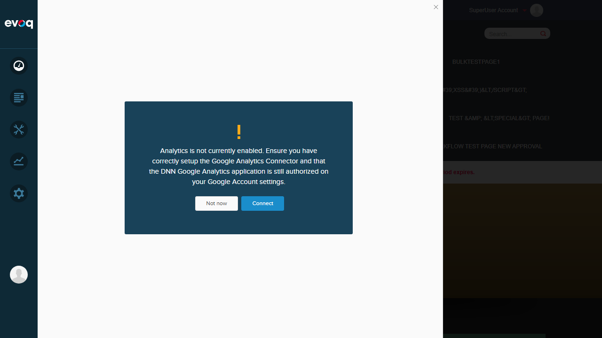

Login Confirmation (Setup - Not a Test)
Successfully logged in as SuperUser Account (host).

| Feature Name | Engagement Trend Indicators |
|---|---|
| Description | Visual indicators showing engagement trends with up/down arrows and warnings |
| Extension | Evoq.PersonaBar.CommunityAnalytics |
| Priority | Medium |
| UI Location | PersonaBar > Dashboard > Community Analytics > Trend Indicators |
| Test Date | January 6, 2026 |
Successfully logged in as SuperUser Account (host).
When attempting to access Community Analytics, a critical JavaScript error prevents the module from initializing:
TypeError: utility.serializeCustomDate is not a function
at dashboardClass.init (social-dashboard-combined-instance.js:1025:39)
at Object.init (social-dashboard-combined.js:16:23)
at extension.js:104:32
Impact: The Community Analytics module fails to load entirely, making it impossible to test any features within this module, including Engagement Trend Indicators.
FAIL
TypeError: utility.serializeCustomDate is not a function
FAIL
FAIL
FAIL
| Test Scenario | Status |
|---|---|
| Display correct trend arrows | FAIL |
| Show warning for concerning trends | FAIL |
| Verify indicator colors | FAIL |
| Test tooltip displays | FAIL |
Overall Result: 0/4 Tests Passed (0%)
Based on code review of the relevant files, the Engagement Trend Indicators feature should include:
icon-engagement-up.png): Displayed when engagement is higher than previous period (CSS class: .percent-progress.higher)icon-engagement-down.png): Displayed when engagement is lower than previous period (CSS class: .percent-progress.lower)icon-engagement-warning.png): Displayed for concerning trends (CSS class: .engagement-warning)icon-engagement-star.png): Displayed for high-performing content (CSS class: .engagement-star).tag-menu class associated with progress indicatorsThe trend indicators are designed to appear in:
The JavaScript error utility.serializeCustomDate is not a function indicates that the utility module is either:
serializeCustomDate function definitionThis appears to be a bug in the module initialization code at social-dashboard-combined-instance.js:1025.
The development team should investigate and fix the utility.serializeCustomDate function availability before the Community Analytics module can be properly tested.